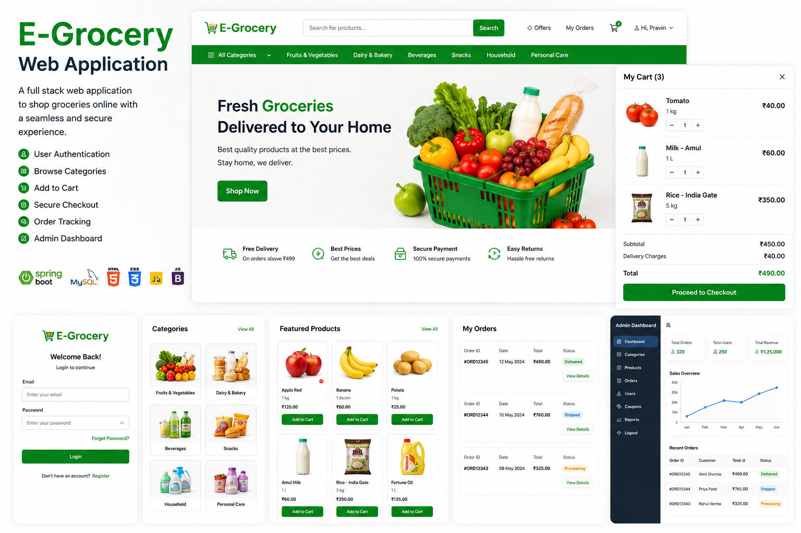
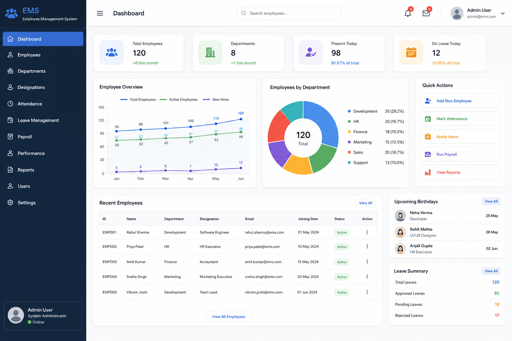
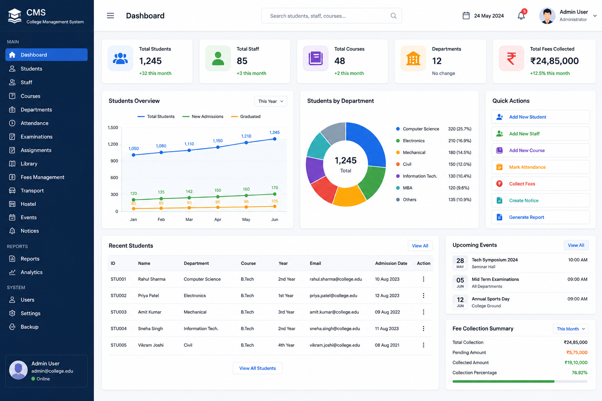

01 / E-COMMERCE01
e-Grocery Web Application
A role-based grocery shopping experience with integrated payments, email verification and dedicated dashboards.
- Java
- Spring Boot
- MySQL
- JSP
- Razorpay API
Project details
- Razorpay payments with transaction verification and OTP-based email validation.
- Role-based Admin, Farmer and Delivery Boy modules with dedicated dashboards.
- Responsive JSP and Bootstrap interface backed by normalized MySQL schemas.

02 / ADMINISTRATION02
Employee Management System
A web application for employee onboarding, record maintenance and administrative tasks.
- Java
- Spring MVC
- JSP
- MySQL
- Bootstrap
Project details
- Employee record CRUD operations using Spring MVC and MySQL.
- Form validation, exception handling and employee search.
- Responsive interface built with JSP and Bootstrap.

03 / EDUCATION03
College Management System
A centralized application for managing academic records and core college workflows.
- Java
- Spring MVC
- JSP
- MySQL
Project details
- Student, faculty, course, admission and academic record management.
- MVC architecture with integrated MySQL data management.
- CRUD workflows for student registration and course allocation.
04
Portfolio Website
A responsive personal website presenting my skills, projects and professional experience.
- HTML
- CSS
- JavaScript
Project details
- Responsive layouts for desktop, tablet and mobile.
- Project showcases, GitHub links, resume download and contact information.
- Structured navigation and a focus on clear, lightweight UI.